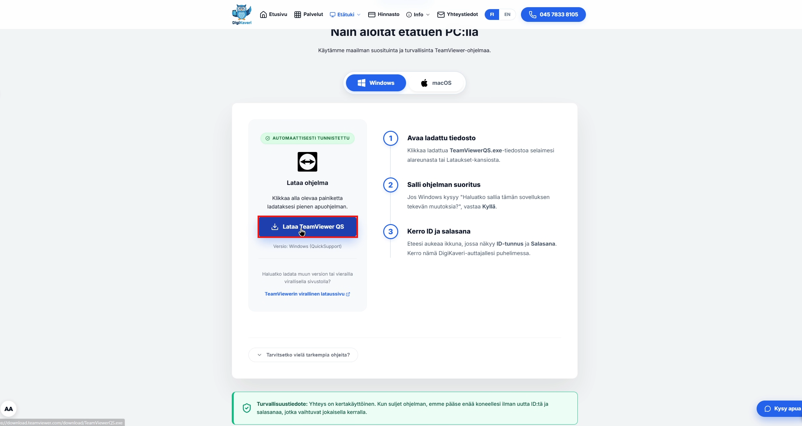
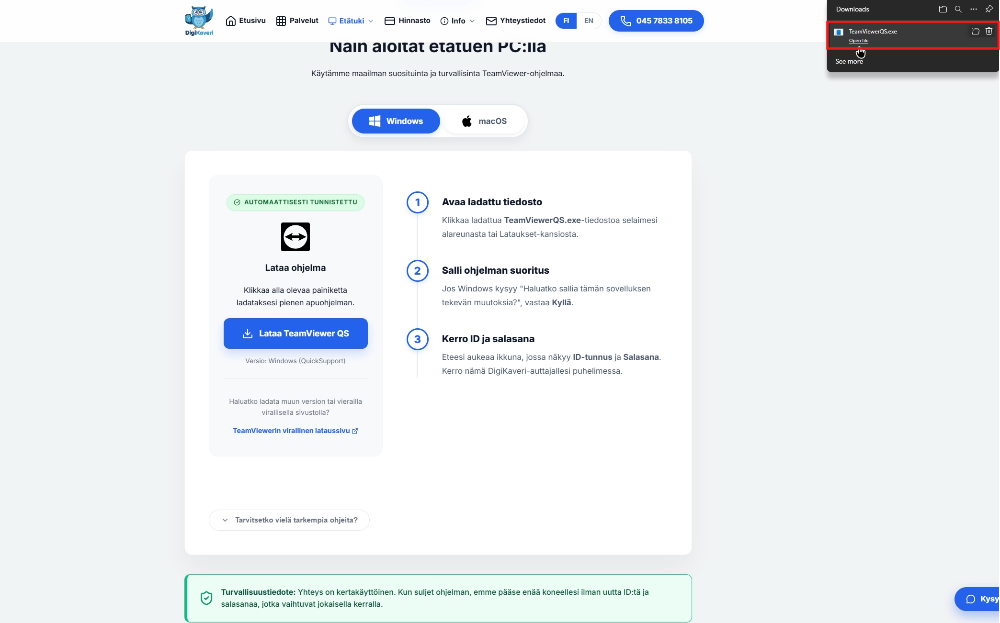
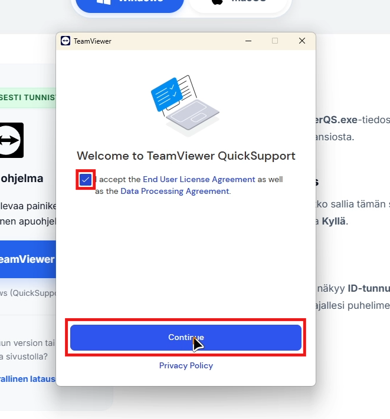
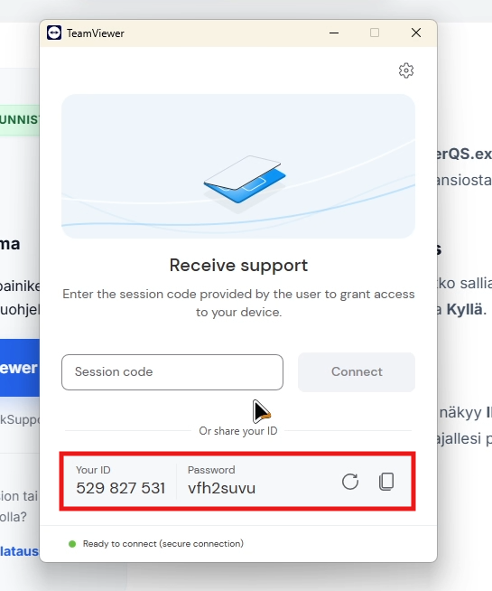
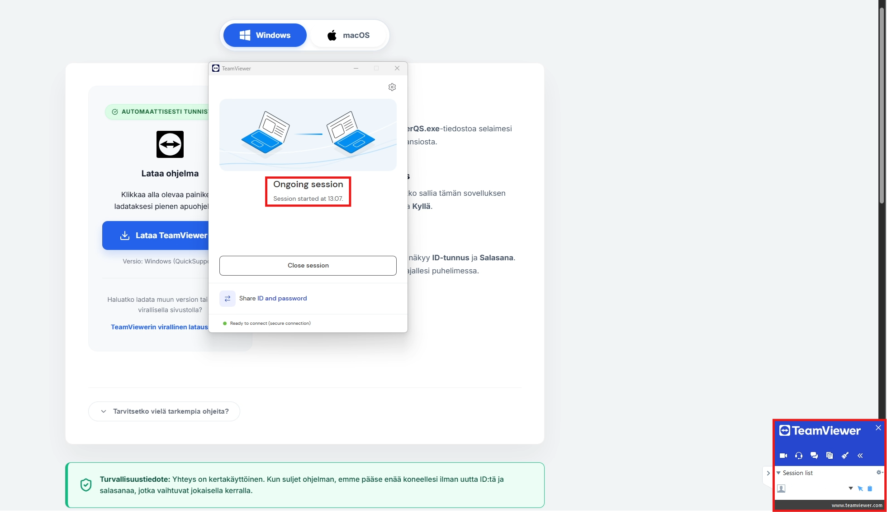

Käytätkö tietokonetta?
Näytä ohjeet Windows- ja Mac-laitteille.
Näin aloitat etätuen PC:llä
Käytämme maailman suosituinta ja turvallisinta TeamViewer-ohjelmaa.

Lataa ohjelma
Klikkaa alla olevaa painiketta ladataksesi pienen apuohjelman.
Lataa TeamViewer QSVersio: Windows (QuickSupport)
Haluatko ladata muun version tai vierailla virallisella sivustolla?
TeamViewerin virallinen lataussivuAvaa ladattu tiedosto
Klikkaa ladattua TeamViewerQS.exe-tiedostoa selaimesi alareunasta tai Lataukset-kansiosta.
Salli ohjelman suoritus
Jos Windows kysyy "Haluatko sallia tämän sovelluksen tekevän muutoksia?", vastaa Kyllä.
Kerro ID ja salasana
Eteesi aukeaa ikkuna, jossa näkyy ID-tunnus ja Salasana. Kerro nämä DigiKaveri-auttajallesi puhelimessa.
Video-opas (Windows)
Windows-manuaali
Klikkaa Lataa TeamViewer QS
Klikkaa ensin Lataa TeamViewer QS -painiketta aloittaaksesi latauksen.

Avaa sovellus
Kun sovellus on latautunut, avaa se selaimesi alalaidasta tai lataukset-kansiosta.

Hyväksy käyttöehdot
Lue ja hyväksy TeamViewerin käyttöehdot klikkaamalla "Hyväksy" tai "Jatka".

ID-tunnus ja salasana
Sen jälkeen näet ruudulla ID:n ja salasanan. Ilmoita ne Digikaveri-tuelle, niin pääsemme auttamaan sinua etäyhteydellä!

Yhteys on valmis
Kun ruudun oikeaan alareunaan ilmestyy pieni TeamViewer-ikkuna, Digikaveri on saanut yhteyden koneeseesi. Tukihenkilö auttaa sinua tästä eteenpäin.

Turvallisuustiedote: Yhteys on kertakäyttöinen. Kun suljet ohjelman, emme pääse enää koneellesi ilman uutta ID:tä ja salasanaa, jotka vaihtuvat jokaisella kerralla.
Tarvitsetko apua puhelimella?
Näytä ohjeet Android- ja iPhone-laitteille.
Puhelin & Tabletti
Lataa oikea sovellus ja kerro ID asiantuntijallemme.
Android-ohje
Lataa sovellus
Klikkaa alla olevaa painiketta ladataksesi QuickSupport-sovelluksen Google Play -kaupasta.
Avaa ja salli luvat
Avaa sovellus ja salli tarvittavat luvat (kuten ilmoitukset ja näytön jako), jotta voimme auttaa sinua etänä.
Kerro ID-koodi
Lue sovelluksen näytöllä näkyvä 9-numeroinen ID-koodi DigiKaveri-auttajallesi puhelimessa.
Video-opas (Android)
Tässä videossa näytämme QuickSupportin
asennuksen Play-kaupasta.
(Video tulossa pian)
Android-manuaali
Salli lisäosat
Jotkut puhelimet (kuten Samsung) kysyvät lupaa asentaa "Add-On". Salli tämä, se on turvallista.
Huom: Jotkut laitteet saattavat pyytää asentamaan lisäosan (Add-On) täyttä etähallintaa varten. Hyväksy tämä asennus, jos sovellus sitä ehdottaa.